Operations
This is the report template for the exam. Please only remove the text formatted as with three dashes in front and behind like:
--- question 1 fill here ---
Where you instead should add your answers. Any other changes may have unwanted consequences when your report is
auto-generated at the end of the course. For questions where you are asked to include images, start by adding the image
to the figures subfolder (please only use .png, .jpg or .jpeg) and then add the following code in your answer:
markdown

In addition to this markdown file, we also provide the report.py script that provides two utility functions:
Running:
bash
python report.py html
Will generate a .html page of your report. After the deadline for answering this template, we will auto-scrape
everything in this reports folder and then use this utility to generate a .html page that will be your serve
as your final hand-in.
Running
bash
python report.py check
Will check your answers in this template against the constraints listed for each question e.g. is your answer too short, too long, or have you included an image when asked. For both functions to work you mustn't rename anything. The script has two dependencies that can be installed with
bash
pip install typer markdown
The checklist is exhaustive which means that it includes everything that you could do on the project included in the curriculum in this course. Therefore, we do not expect at all that you have checked all boxes at the end of the project. The parenthesis at the end indicates what module the bullet point is related to. Please be honest in your answers, we will check the repositories and the code to verify your answers.
data.py file such that it downloads whatever data you need and preprocesses it (if necessary) (M6)model.py and a training procedure to train.py and get that running (M6)requirements.txt and requirements_dev.txt file with whatever dependencies that you
are using (M2+M6)pep8) while doing the project (M7)Enter the group number you signed up on
Answer:
14
Enter the study number for each member in the group
Example:
sXXXXXX, sXXXXXX, sXXXXXX
Answer:
s241645, s242766, s232735, s204225, s204218
A requirement to the project is that you include a third-party package not covered in the course. What framework did you choose to work with and did it help you complete the project?
Recommended answer length: 100-200 words.
Example: We used the third-party framework ... in our project. We used functionality ... and functionality ... from the package to do ... and ... in our project.
Answer:
We used the third-party framework PyTorch Image Models (TIMM) in our project. We primarily used the "create_model" function to easily get a pre-trained model which we could transfer learn on our dataset. We chose to go with a smaller mobilenet_v3_050 model and a somewhat larger (but still relatively small so everything could be run locally on everyones computer) resnet18 model. We tried the resnet50 model, but one of our group members computer crashed when trying to run the train.py script. This was an easy way to get some different image models which we could compare with our own simple CNN.
In the following section we are interested in learning more about you local development environment. This includes how you managed dependencies, the structure of your code and how you managed code quality.
Explain how you managed dependencies in your project? Explain the process a new team member would have to go through to get an exact copy of your environment.
Recommended answer length: 100-200 words
Example: We used ... for managing our dependencies. The list of dependencies was auto-generated using ... . To get a complete copy of our development environment, one would have to run the following commands
Answer:
We started with a single requirements file that was basically the same as the course (maybe with extra packages), but it grew pretty large pretty fast as it was just a copy of our joint conda enviroments from pip freeze. As we came closer to the end of the project we decided to run pipreq to shorten the large list and added the missing packages for the python scripts to run by hand, and added some dev packages to the dev requirements file by hand. To get a complete copy of our environment, a new member must run:
pip install -r requirements.txt
pip install -r requirements_dev
pip install -e
These 3 can also be executed with invoke commands.
To get the data a member must add a config.local file in the .dvc folder and run
dvc pull
and accept all authentication steps. Someone outside of the project would have to download the data from kaggle (see the README file at root)
We expect that you initialized your project using the cookiecutter template. Explain the overall structure of your code. What did you fill out? Did you deviate from the template in some way?
Recommended answer length: 100-200 words
Example: From the cookiecutter template we have filled out the ... , ... and ... folder. We have removed the ... folder because we did not use any ... in our project. We have added an ... folder that contains ... for running our experiments.
Answer:
From the cookiecutter template we have filled out the .github, configs, data, dockerfiles, (docs), models, reports, src, tests folder. We have removed the notebooks (and docs) folder, since we didn't use any noteboooks. We have added a .dvc folder, so we can utilize the functionalities from dvc. We had credentials like a .env for the Wandb api key in the root of the project folder but these were added to .gitignore for security reasons. But we have mostly stayed with the cookiecutter template in order to not break any of the file path dependencies. But as a tool to add structure to a project, cookiecutter is definitely a nice-to-have.
Did you implement any rules for code quality and format? What about typing and documentation? Additionally, explain with your own words why these concepts matters in larger projects.
Recommended answer length: 100-200 words.
Example: We used ... for linting and ... for formatting. We also used ... for typing and ... for documentation. These concepts are important in larger projects because ... . For example, typing ...
Answer:
We used ruff for linting and to conform to pep8. Ruff was also a part of our pre-commit and used in github actions to enforce it. We also used the built-in python type hints for typing, and applied it to the best of our abilities, but we did not enforce it via external packages or in the github actions workflow. The code was documented to the best of our abilities through comments which we crafted ourselves, but github copilot did come in handy there as it sped up the process. Most methods and functions also used doc strings to simply explain the purpose of the methods.
These concepts are important in larger projects because it streamlines the code, and makes it more readable for other users. It also has the advantage that it makes the code easier to come back to and understand if one have been away from it for a year or more. Especially in larger projects, where multiple scripts communicate with each other and everything simply becomes more complex, the above mentioned concepts are almost a necessity, unless one enjoys time wasting and general chaos.
In the following section we are interested in how version control was used in your project during development to corporate and increase the quality of your code.
How many tests did you implement and what are they testing in your code?
Recommended answer length: 50-100 words.
Example: In total we have implemented X tests. Primarily we are testing ... and ... as these the most critical parts of our application but also ... .
Answer:
In total we have implemented 8 test functions. 6 of these are api tests, 1 is a model test and 1 is a data test. The most important api test, are those that test the predict "method" returns the expected json format. The model test simply tests if the output is of the expected size. The data test tests for the size and shape of the dataset, the number of classes and that every class is represented.
Additionally we created performance tests with locust to load test our api. There were in total 5 defined performance test functions.
What is the total code coverage (in percentage) of your code? If your code had a code coverage of 100% (or close to), would you still trust it to be error free? Explain you reasoning.
Recommended answer length: 100-200 words.
Example: The total code coverage of code is X%, which includes all our source code. We are far from 100% coverage of our ** code and even if we were then...*
Answer:
The total code coverage of tested code is 73%, which include the most important source code (api, data, model). For the api and model we are over 90%, but for the data we are only at 22%. This is mostly due to the fact that we have written new functions for the data file, which we haven’t written tests to. The most essential functions are tested. But even if we got 100% code coverage, there is no guarantee that the code is error free. This is because we can’t write tests on every edge-case, and some of these might make the code break. But with a high code coverage, one can at least feel a little bit safer.
Did you workflow include using branches and pull requests? If yes, explain how. If not, explain how branches and pull request can help improve version control.
Recommended answer length: 100-200 words.
Example: We made use of both branches and PRs in our project. In our group, each member had an branch that they worked on in addition to the main branch. To merge code we ...
Answer:
We made use of both branches and PRs in our project. No one had their own branch, but made a branch and named it according to what feature they were implementing. In hindsight, dedicating one branch to each member might have been a smart move, to reduce the amount of "i forgot to delete my branch after a successfull PR". After we did a PR, we typically (if it was a larger or more important PR) send a message in slack describing what changes we have done, and if anyone should be aware of some of these changes (eg. some of the code now depends on the tests completing, so if your code doesn't complete the tests, something have probably been broken).
Did you use DVC for managing data in your project? If yes, then how did it improve your project to have version control of your data. If no, explain a case where it would be beneficial to have version control of your data.
Recommended answer length: 100-200 words.
Example: We did make use of DVC in the following way: ... . In the end it helped us in ... for controlling ... part of our pipeline
Answer:
We did make use of the DVC in our project. We used it with the aim to version control our data, however the raw dataset was never changed, so we never had to revert to an earlier version of the dataset or create new versions of it. The dataset essentially only has two major versions: the dataset only containing the original raw data, and the dataset containing the raw data and the preprocessed data. This did however help us in the sense that we could easily share the dataset between group members, and we could easily download the dataset from the cloud to our local machine.
It's good to note that we have the dvc dataset stored in google drive rather than gcp bucket, as we already set it up that way in week one, and we did not see the need to change our remote storage at this point unless we had time to spare e.g. maybe we finished the project early or something of the sort.
Discuss you continuous integration setup. What kind of continuous integration are you running (unittesting, linting, etc.)? Do you test multiple operating systems, Python version etc. Do you make use of caching? Feel free to insert a link to one of your GitHub actions workflow.
Recommended answer length: 200-300 words.
Example: We have organized our continuous integration into 3 separate files: one for doing ..., one for running ... testing and one for running ... . In particular for our ..., we used ... .An example of a triggered workflow can be seen here:
Answer:
We do multiple continuous integration.
We do unit-testing, build and push docker images, run load test on the deployed api using locust, linting via ruff, pre-commit, and model testing.
All workflows are done on ubuntu, except the unit-testing which is done on ubuntu, windows and mac operating systems. The unit-testing also runs on two python versions, namely 3.11 and 3.12. Whenever we need to install dependencies, we use caching to speed things up.
Here is a link to the model testing workflow: https://github.com/arnormoncada/mlops-plant-seedlings/blob/main/.github/workflows/stage_model.yaml.
We have organized the continuous integrations into their own seperate file for easy overview and handling. Even though we have multiple workflows, they do not take long to run, as they run in parallel. We do ignore the data tests in testing workflow, as there has been an issue with the setup-dvc@v1 action and has not been adressed. Meaning our dvc pulls in the workflow were not dependable and could fail at any time.
https://github.com/iterative/setup-dvc/issues/66
Although we have what some would say were a lot of workflows, we could definitely have added more, for instance a workflow that does the data drifting automatically if data is added somewhere in the process. This could ensure early on that our model's data input stays within expected margins.
In the following section we are interested in learning more about the experimental setup for running your code and especially the reproducibility of your experiments.
How did you configure experiments? Did you make use of config files? Explain with coding examples of how you would run a experiment.
Recommended answer length: 50-100 words.
Example: We used a simple argparser, that worked in the following way: Python my_script.py --lr 1e-3 --batch_size 25
Answer:
We made use of config files. The main config file "config.yaml" was used to specify optimizer, model etc. We then had separate config files for each of these to specify the hyperparameters such as learning rate and batch size. In our project we only made use of the adam optimizer, but the setup works to handle multiple selections of optimizer as well. Before running an experiment, one had to set up the experiment by changing parameters through these config files, thus no arguments were passed.
Reproducibility of experiments are important. Related to the last question, how did you secure that no information is lost when running experiments and that your experiments are reproducible?
Recommended answer length: 100-200 words.
Example: We made use of config files. Whenever an experiment is run the following happens: ... . To reproduce an experiment one would have to do ...
Answer:
We made use of config files via Hydra. Whenever an experiment is started, multiple print statements are run that display the contents of the config files, so that you can catch if that was indeed the experiment you intended to run. We also used seeding to make the training as reproducible as possible. In addition to this, all configurations were saved as satellite data, thus visible in weights and biases. All final models were saved as artifacts on wandb to ensure reproducibility. As we don't use any randomization we haven't set a seed but regardless it can be a good idea to set one, just in case.
Upload 1 to 3 screenshots that show the experiments that you have done in W&B (or another experiment tracking service of your choice). This may include loss graphs, logged images, hyperparameter sweeps etc. You can take inspiration from this figure. Explain what metrics you are tracking and why they are important.
Recommended answer length: 200-300 words + 1 to 3 screenshots.
Example: As seen in the first image when have tracked ... and ... which both inform us about ... in our experiments. As seen in the second image we are also tracking ... and ...
Answer:
We used wandb’s sweep feature to tune hyperparameters with the bayesian method. To configure the sweep we used sweep_config.yaml to maximize validation accuracy. The tunable parameters were model type, optimizer type, learning rate, momentum, weight decay, step size and batch size.
Our sweep followed a pipeline consisting of a sweep where loss, accuracy for the train, test, validation sets and inference time was logged. After training and evaluation the model was saved in a GCP bucket. We limit the amount of runs by defining the run count in the wand agent.
The chosen metrics loss, accuracy and inference time are important in our case as our problem is a classification task you are either right or wrong so accuracy is a great way of measuring performance. Our model should also be able to run fast to be useful for any agriculture application so logging inference time is also important, with these metrics as context we can choose the best model.
Here below you can see the results of our wandb sweeps they are really cool we think. It might be hard to see which exact model is performing great, but that is much, much easier to see in the wandb webpage.
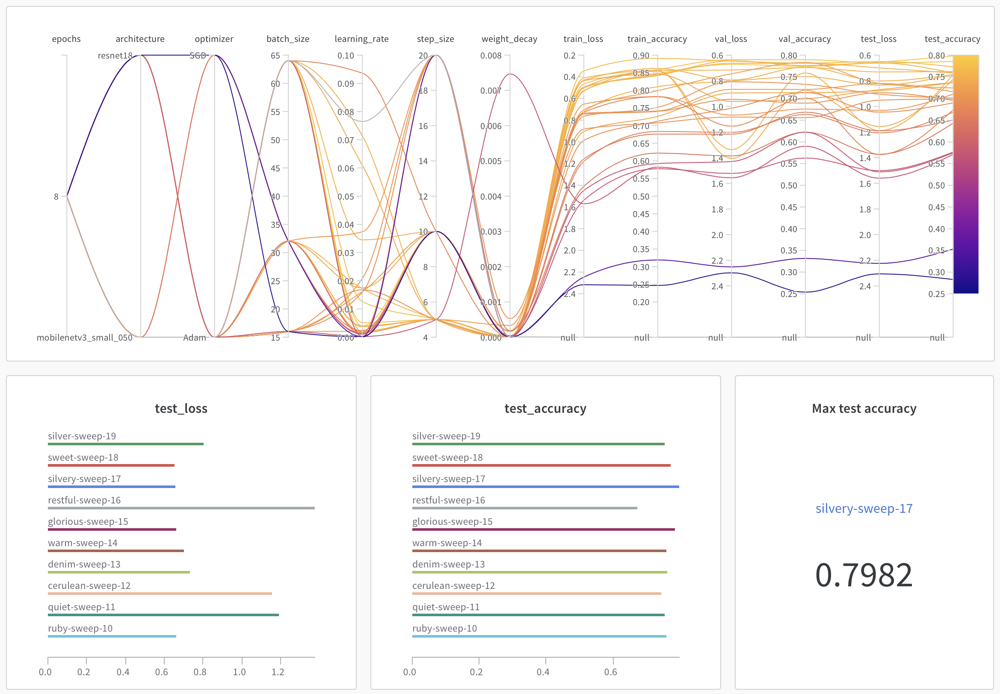
Docker is an important tool for creating containerized applications. Explain how you used docker in your experiments/project? Include how you would run your docker images and include a link to one of your docker files.
Recommended answer length: 100-200 words.
Example: For our project we developed several images: one for training, inference and deployment. For example to run the training docker image:
docker run trainer:latest lr=1e-3 batch_size=64. Link to docker file:Answer:
We created two separate docker images, one for training and one for the api. Though the training docker image was not used as much, but it still was created for reproducibility purposes.
The api docker image was crucial for this project as it was easy to run the service locally through it, but also it was an integral part in our continuous cloud build pipeline. Where the api was containerized, built, pushed to the cloud artifact registry and then deployed.
The api image was also built and pushed to docker hub as a part of our github actions workflows:
https://hub.docker.com/r/arnormoncada/api
You can pull one of the images from the tags tab e.g.
docker pull arnormoncada/api:97ec88f5beb75b8e33d5a77e59acce45d298ee30
and then run it locally with:
docker run -p 8000:8000 -e PORT=8000 arnormoncada/api:97ec88f5beb75b8e33d5a77e59acce45d298ee30
When running into bugs while trying to run your experiments, how did you perform debugging? Additionally, did you try to profile your code or do you think it is already perfect?
Recommended answer length: 100-200 words.
Example: Debugging method was dependent on group member. Some just used ... and others used ... . We did a single profiling run of our main code at some point that showed ...
Answer:
The type of debugging used was very dependent on both the group member and the type of error as the easiest solution often tends to differ. We used both ad-hoc print statements for showing temporary results while running, vs-code debugger for more in-depth analysis (such as shapes or types) and occasional profiling for timeouts etc. Additionally we made use of visual inspection of image results when applicable. One example of this type of visual inspection and direct data investigation was when we experienced different performance in the api against the actual evaluation (it turned out that the images were handled slightly differently, resulting in misclassifications).
In the following section we would like to know more about your experience when developing in the cloud.
List all the GCP services that you made use of in your project and shortly explain what each service does?
Recommended answer length: 50-200 words.
Example: We used the following two services: Engine and Bucket. Engine is used for... and Bucket is used for...
Answer:
APIs & Services: Manages API access and integrations for Google Cloud Services.
IAM & Admin: Identity and access management for cloud projects. Management of permissions, roles and access control for cloud resources.
Cloud Run: Platform to run and scale containerized applications.
Artifact Registry: A service/place to store and manage artifacts e.g. docker images used for deployment.
Cloud Build: A platform for executing automated build pipelines, allowing you to build and deploy images. Monitoring: A out of the box platform for metric collection and dashboards. Where you can monitor the performance and health of your deployed services and set alerts.
Bucket: A basic data storage container, usually used for storing things like files and multimedia files.
Compute Engine: Hosting service which lets you create and use VMs on the google cloud infrastructure with customizable hardware and configs. Easily scalable also.
The backbone of GCP is the Compute engine. Explained how you made use of this service and what type of VMs you used?
Recommended answer length: 100-200 words. (Talk about VM why not vertexAI, what GPU) Example: We used the compute engine to run our ... . We used instances with the following hardware: ... and we started the using a custom container: ...
Answer:
We used a VM instance with an Nvidia T4 GPU with a machine type n1-standard to run training. One of our GCP buckets contains every trained model. This way we could train models without cluttering up the github or our local machine and still share access to every model with team members. The premise behind this idea is we could see the best performing model on Wandb, then find it in the bucket as it has the same run name and then deploy that. We found this method to work very nicely and is definately something we intend to use in future projects if applicable.
Insert 1-2 images of your GCP bucket, such that we can see what data you have stored in it. You can take inspiration from this figure.
Answer: Here below is the GCP bucket of all our trained models
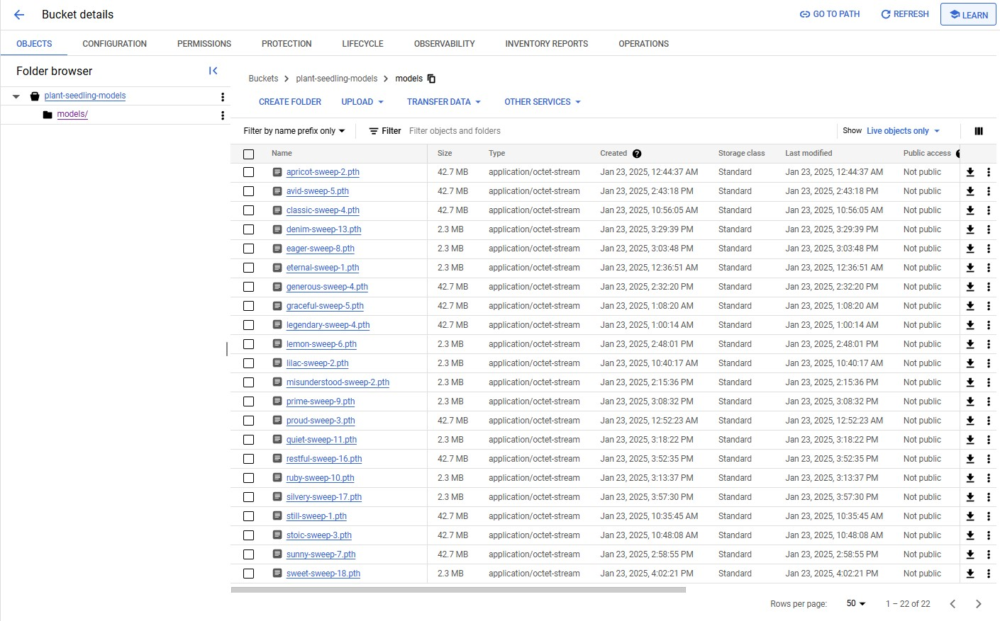
Here below is the GCP bucket of all our stored cloud builds.
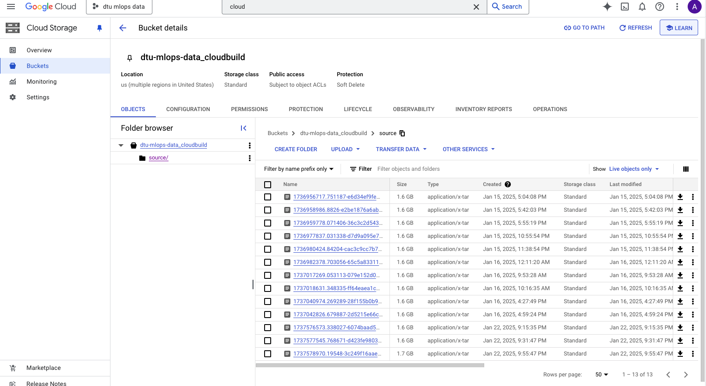
Upload 1-2 images of your GCP artifact registry, such that we can see the different docker images that you have stored. You can take inspiration from this figure.
Answer:
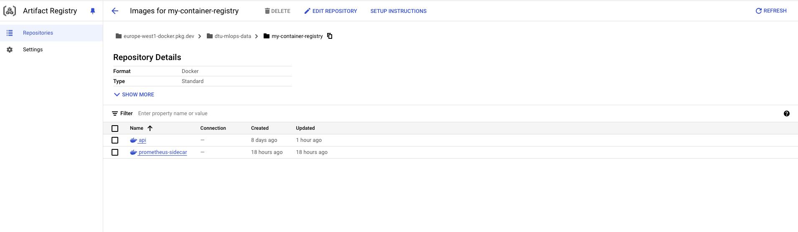
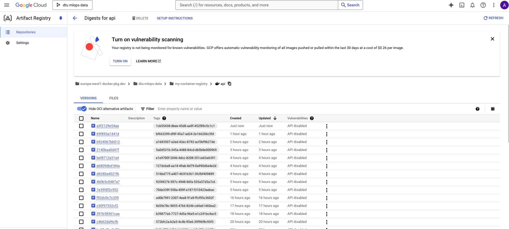
Upload 1-2 images of your GCP cloud build history, so we can see the history of the images that have been build in your project. You can take inspiration from this figure.
Answer:
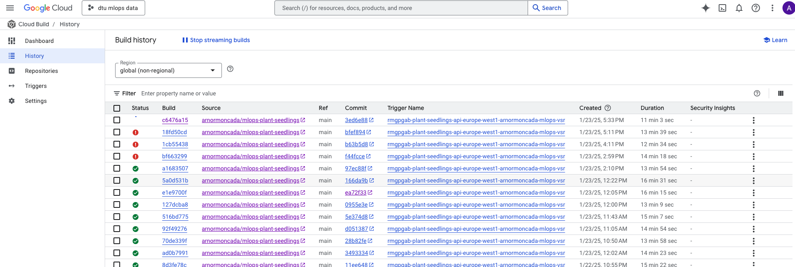
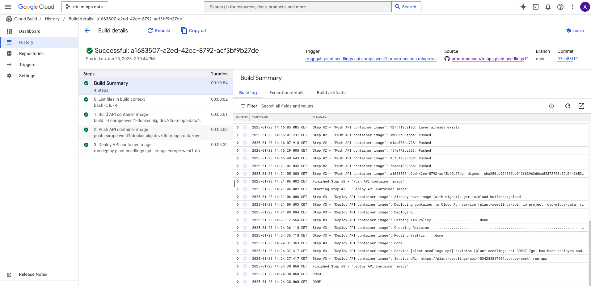
Did you manage to train your model in the cloud using either the Engine or Vertex AI? If yes, explain how you did it. If not, describe why.
Recommended answer length: 100-200 words.
Example: We managed to train our model in the cloud using the Engine. We did this by ... . The reason we choose the Engine was because ...
Answer:
Our first venture was to use VertexAI to do model training and hyperparameter sweeps, logging and saving models in the artifact registry, an ambitious task and it was too ambitious. We ran into problems integrating our code into a format vertexAI can work with and the course timeline was too tight to solve the issue we decided to pivot and use a VM instance to do model training. But once again we landed in internet difficulties copying the data over to the VM instance after 4 hours the data was still downloading into the VM instance. Thankfully one team member had a nvidia card that was cuda capable gtx 3060 and we did the sweep with that.
Did you manage to write an API for your model? If yes, explain how you did it and if you did anything special. If not, explain how you would do it.
Recommended answer length: 100-200 words.
Example: We did manage to write an API for our model. We used FastAPI to do this. We did this by ... . We also added ... to the API to make it more ...
Answer:
Yes we created an API using the FastAPI framework. The api has a total of three endpoints:
GET /
GET /models
POST /predict
The get models endpoint returns the available models for the service. The post predict endpoint allows a user to select their model for inference and upload an image of a plant seedling and get a prediction.
The model loads in the three available models and their weights from selected "best" training runs on startup.
The most important endpoint is the /predict. It has query parameter enum where for the user to pick one of the available models for the inference. It then has some basic input validations on the type of files uploaded and responds with a 400 if a wrong filetype is uploaded.
It is also integrated with prometheus for some basic metrics. https://plant-seedlings-api-1034288317994.europe-west1.run.app/metrics/
The OAS swagger is available at: https://plant-seedlings-api-1034288317994.europe-west1.run.app/docs
Did you manage to deploy your API, either in locally or cloud? If not, describe why. If yes, describe how and preferably how you invoke your deployed service?
Recommended answer length: 100-200 words.
Example: For deployment we wrapped our model into application using ... . We first tried locally serving the model, which worked. Afterwards we deployed it in the cloud, using ... . To invoke the service an user would call
curl -X POST -F "file=@file.json"<weburl>Answer:
Yes, the api was first developed and "deployed" locally, and then a cloudbuild.yaml was defined to build the api image, upload it to the artifact registry and then deploy the service using cloudbuild.
The github repository was then connected to the cloud run service for continuous deployment. Meaning whenever changes were pushed on main, the service was built and redeployed using the before mentioned cloudbuild.yaml.
Here is the url to the service. I would recommend using the OAS swagger ( /docs ) to try out the endpoints. Easier that way when it comes to uploading files. The swagger also provides example curl commands if preferred. https://plant-seedlings-api-1034288317994.europe-west1.run.app/
Did you perform any unit testing and load testing of your API? If yes, explain how you did it and what results for the load testing did you get. If not, explain how you would do it.
Recommended answer length: 100-200 words.
Example: For unit testing we used ... and for load testing we used ... . The results of the load testing showed that ... before the service crashed.
Answer:
Yes, we wrote integration tests and performance tests for the api.
The performance tests were creating using locust. Each endpoint was load tested with specific weights. With the predict endpoint having the highest weight and three separate tests for each available model, since this is the most important endpoint. The performance tests were also added to github actions as a separate workflow which triggers on merges to main and stores the results as an artifact. It does the performance test on the api deployed to google cloud. An example result from one of the github workflows can be seen here:
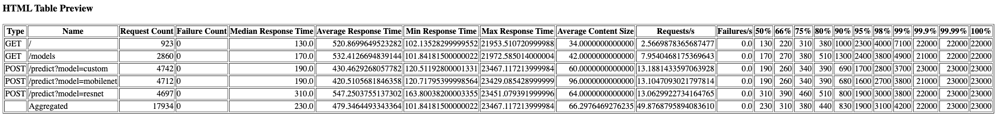
Basic Integration tests were added to test the endpoints. The aim was to make test what could be considered deterministic for the api, i.e. the status codes and response schemas. This was also a part of github actions.
Did you manage to implement monitoring of your deployed model? If yes, explain how it works. If not, explain how monitoring would help the longevity of your application.
Recommended answer length: 100-200 words.
Example: We did not manage to implement monitoring. We would like to have monitoring implemented such that over time we could measure ... and ... that would inform us about this ... behaviour of our application.
Answer:
Yes we implement some monitoring for the api. We instrumented our API with prometheus. We defined the following metrics to be stored:
error_counter = Counter("errors", "Number of errors", ["endpoint", "status_code"], registry=MY_REGISTRY)
request_counter = Counter("requests", "Number of requests", ["endpoint", "status_code"], registry=MY_REGISTRY)
request_latency = Histogram("request_latency_seconds", "Request latency", ["endpoint"], registry=MY_REGISTRY)
plant_image_size = Summary("plant_image_size", "Size of the plant image inputs", registry=MY_REGISTRY)
As can be seen an error counter and request counter was defined. Also the how long it took for requests to finish for the endpoints, and the total image size of uploaded media to the api.
These metrics are then accessible at: https://plant-seedlings-api-1034288317994.europe-west1.run.app/metrics/
We were not able to setup cloud monitoring for these instrumented metrics with the sidecar and/or kuberentes approach as it clashed with our current continuous deployment setup and we would’ve had to change too many things with little time left in the course.
We did however create some system alerts if the API is not behaving as expected. Such as if the number of 500 errors exceeded some threshold or if the latency of requests is too high. It would then alert us through email. Here below is an example alert we recieved and it's resolution:
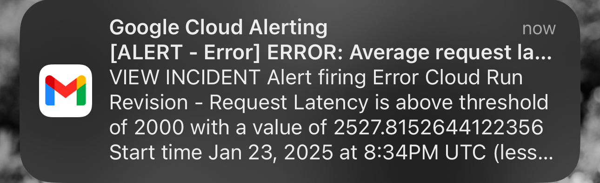
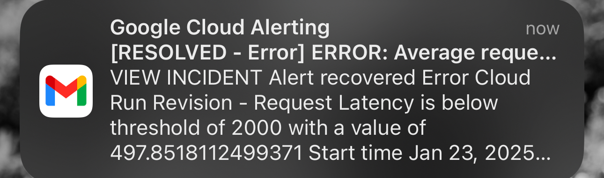
In the following section we would like you to think about the general structure of your project.
How many credits did you end up using during the project and what service was most expensive? In general what do you think about working in the cloud?
Recommended answer length: 100-200 words.
Example: Group member 1 used ..., Group member 2 used ..., in total ... credits was spend during development. The service costing the most was ... due to ... . Working in the cloud was ...
Answer:
Not all group members were using the cloud, as we didn't do much training on the cloud. There were pretty much two members in charge of cloud related tasks.
For one of the members the cost was around 2$. The three billed services were all pretty close to each other (cloud run, articat registry and cloud storage). However the most expensive service was the cloud storage, coming around 1$, which was most likely a result of the stored cloud builds in the bucket.
The other team member used 0.46 cents in cloud compute for a VM instance to train models but since that did not work out as planned we trained on a local machine and 0.06 cents was spent for a bucket for model storage.
In reality we didn't end up using many rescources regardless in the cloud.
Did you implement anything extra in your project that is not covered by other questions? Maybe you implemented a frontend for your API, use extra version control features, a drift detection service, a kubernetes cluster etc. If yes, explain what you did and why.
Recommended answer length: 0-200 words.
Example: We implemented a frontend for our API. We did this because we wanted to show the user ... . The frontend was implemented using ...
Answer:
We implemented drift detection, but didn’t get it to run on the cloud. Since our dataset comprised of images, we
first had to extract image features from our dataset and save it in a csv file. We went with the simple script available in M27, where we extracted sharpness, brightness and contrast. When this was done, we altered the api script so we could make mock-up data to "simulate" new data. We tried to add around 1% of the total dataset, and according to the evidently framework we have data-drifting, indicating that our dataset is not very robust against data drifting.
Include a figure that describes the overall architecture of your system and what services that you make use of. You can take inspiration from this figure. Additionally, in your own words, explain the overall steps in figure.
Recommended answer length: 200-400 words
Example:
The starting point of the diagram is our local setup, where we integrated ... and ... and ... into our code. Whenever we commit code and push to GitHub, it auto triggers ... and ... . From there the diagram shows ...
Answer:
The starting point of the diagram is our dev, which points to our project, DVC and github. It points to our project because we as developers, develop code, and to github because that is were we do version control and store our code. In our code, we have utilized cookiecutter for the project template, WandB for logging, hydra for configs, timm for pretrained image models and docker for containerization.
Then from github, a lot of continuous integration stuff happens. We have github actions, with our workflows, coverage for testing our code, and pep8 for linting. In our workflows we have also added continuous cloud deployment, which brings us to the cloud section of the diagram.
As explained earlier in question 17, we have used several services from the GCP, so we will not explain them further in this question. But with the cloud services, we have been able to deploy our model via the cloud run and build, and, together with some API stuff, this brings us to the next section of the diagram.
In the API, the user is able to make a query, and test our model on any image they so wish. Ideally, it should be an image that is similar to our data, else it won't really make sense. A user is also able to clone our git repository. Here they will find everything they need in order to try and run our models (except the data). To aquire the data, they could do a DVC pull, but due to authorization isssues, this method is mostly intended for other developers. A user should therefore try and download the dataset via Kaggle instead, if they want to try and train another model on the same data. The diagram can be seen below:
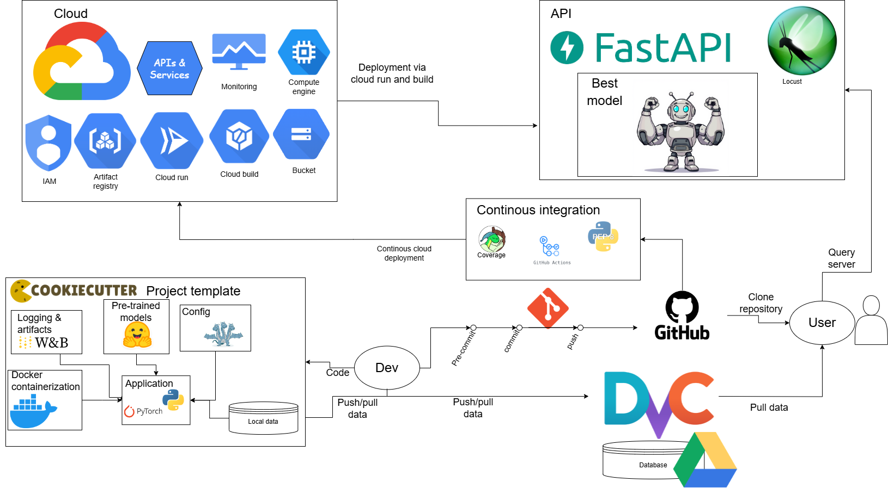
Discuss the overall struggles of the project. Where did you spend most time and what did you do to overcome these challenges?
Recommended answer length: 200-400 words.
Example: The biggest challenges in the project was using ... tool to do ... . The reason for this was ...
Answer:
One of the problems we had to deal with was GCP and getting it to work with our python scripts. One helpful tool was the tutorial side page in GCP and using google's gemini to ask questions. But one problem constantly encountered was failing to upload a model to the GCP bucket and this was due to the poor internet connection of one team member to solve this code was added to break the upload process into 5 MB chunks.
One big challenge from week 1 was setting up the remote repository for dvc in google drive (as we did not learn about buckets yet). Mainly the part about oauth consent screen and creating an app client and assigning everyone to it as a test user. This was a bit of a hassle as we were all still unfamiliar with the GCP interface and how to navigate it. There was no special secret to overcoming it, just a lot of trial and error and reading the documentation. But in the end it was a good learning experience and we got it to work.
Another problem was the docker train images taking up way too much space and taking very long to build. We did not end up using the train docker image much so we only had to build and run it once just to make sure that it was done correctly. If it was not done correctly, i.e. problem with the dockerfile, we had to change it and rebuild the image. This repeated rebuilding ended up taking ~60 gb of space locally for one of the team members and completely filling the local storage. Building this image also took ~15 minutes. We overcame this by brute force, when the disk was full everything was deleted, and then after a couple more tries we got the train images to work.
State the individual contributions of each team member. This is required information from DTU, because we need to make sure all members contributed actively to the project. Additionally, state if/how you have used generative AI tools in your project.
Recommended answer length: 50-300 words.
Example: Student sXXXXXX was in charge of developing of setting up the initial cookie cutter project and developing of the docker containers for training our applications. Student sXXXXXX was in charge of training our models in the cloud and deploying them afterwards. All members contributed to code by... We have used ChatGPT to help debug our code. Additionally, we used GitHub Copilot to help write some of our code. Answer:
We shared the workload of the different parallel operations tasks and everyone helped each other out as needed, but if we were to appoint members to these tasks it would be more or less something like the following:
Student s241645 (Arnór) was in charge of GCP runs, builds and monitoring. API development, testing, Github actions and data version control.
Student s242766 (Dagur) was in charge of docker files, CLI commands and pre-commit hooks.
Student s232735 (Jason) was in charge of sweep configs, model GCP bucket and cloud training.
Student s204225 (Viktor) was in charge of training scripts, W&B log overview
Student s204218 (Jonas) was in charge of training scripts, data drifting evaluation, config configuration
GitHub Copilot was used for auto completing simple/trivial lines of code. ChatGPT was used for debugging and discussing the project in general.